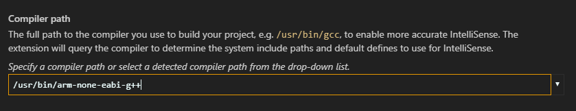
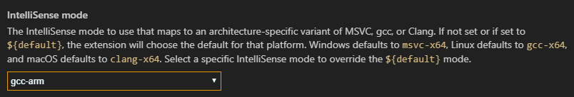
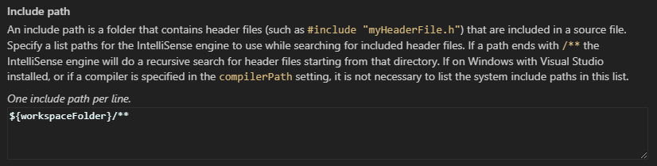

IntelliSense for cross-compiling
The article is about configuring the C/C++ extension to provide proper IntelliSense (code completions) in Visual Studio Code when you compile for a different architecture than your development host machine. For example, when your host machine is x64 but you are compiling for ARM.
The C/C++ extension isn't a compiler--it provides rich language features such as syntax highlighting and IntelliSense. For the extension to provide correct IntelliSense suggestions, and to reflect the right sizes of data types, you need to configure the C++ extension to emulate the target architecture.
These configuration settings are stored in your project's c_cpp_properties.json file. To edit this file, in VS Code, select C/C++: Edit Configurations (UI) from the Command Palette (kb(workbench.action.showCommands)):

Example IntelliSense configuration
The following shows configuring the C/C++ extension for a Linux x64 host machine that targets Linux ARM. It configures the following IntelliSense settings:
- Compiler path: the extension queries your compiler at this location to retrieve system libraries and compiler defines.
- IntelliSense mode: emulates the target architecture and compiler so that the extension can provide correct IntelliSense and reflect the right sizes of data types such as
pointer,size_t,long, and so on.
At a minimum, setting compiler path and IntelliSense mode provides enough information for the extension to emulate your project's target architecture.
Compiler path
Set to the full path of the compiler you are using to build your project.
For example:

IntelliSense mode
Set to the architecture-specific variant of the compiler you are using.
For example:

Include path
You only need to modify the Include path if your program includes header files that aren't in your workspace, or that are not in the standard library path.
The C/C++ extension populates the include path by querying the compiler specified by Compiler path. If the extension can't find the path for the target system libraries, you can enter the include path manually:

Given the settings above, your c_cpp_configuration.json file will look something like the following. You can open it by selecting C/C++: Edit Configurations (JSON) from the Command Palette:
{
"configurations": [
{
"name": "myConfigurationName",
"includePath": [
"${workspaceFolder}/**"
],
"defines": [],
"compilerPath": "/usr/bin/arm-none-eabi-g++",
"cStandard": "c11",
"cppStandard": "c++14",
"IntelliSenseMode": "gcc-arm"
}
],
"version": 4
}
Next steps
- For more information about IntelliSense configuration, see Customizing default settings.
- If you have trouble configuring the settings, file an issue in the VS Code documentation repository.
- Explore the c_cpp_properties schema.
- Review the Overview of the C++ extension.